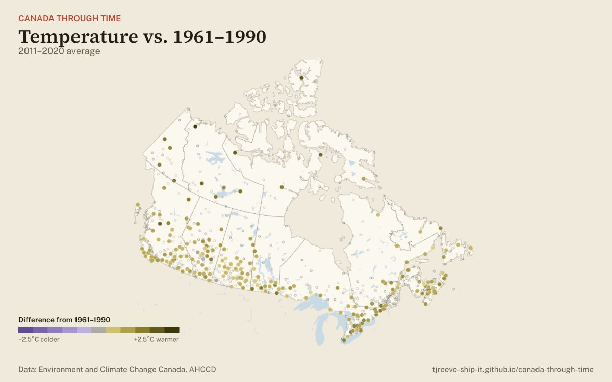

Climate · temperature
Warming at Canada’s weather stations

Open the warming map →Environment and Climate Change Canada adjusts each long-running weather station’s record for moves and instrument changes so that years can be compared. Comparing each station with its own 1961–1990 average, 216 of the 217 stations with enough data were warmer on average in 2011–2020.
The interactive map plays every year from 1900, shows each station’s full record, and also covers precipitation and each station’s long-term trend.
Rules: a station’s 1961–1990 average needs at least 25 of the 30 years; a 10-year average needs 8 of 10. Each dot is a station, not an area. Source: Environment and Climate Change Canada, Adjusted and Homogenized Canadian Climate Data (AHCCD).
Open the warming map →